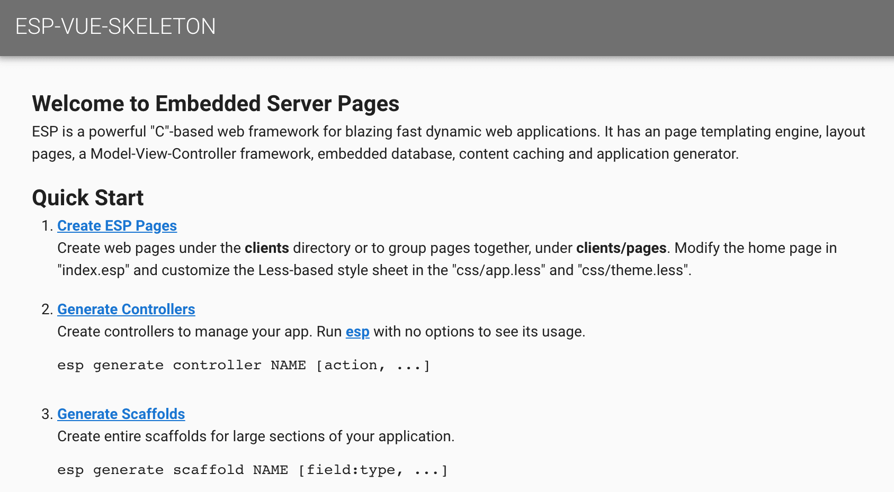
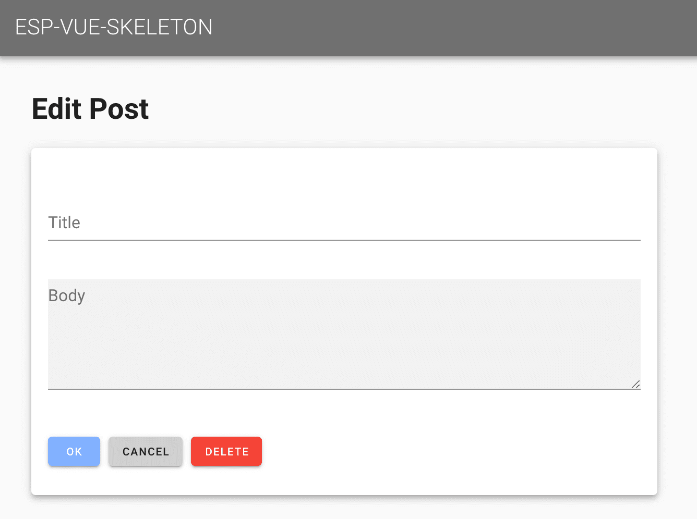
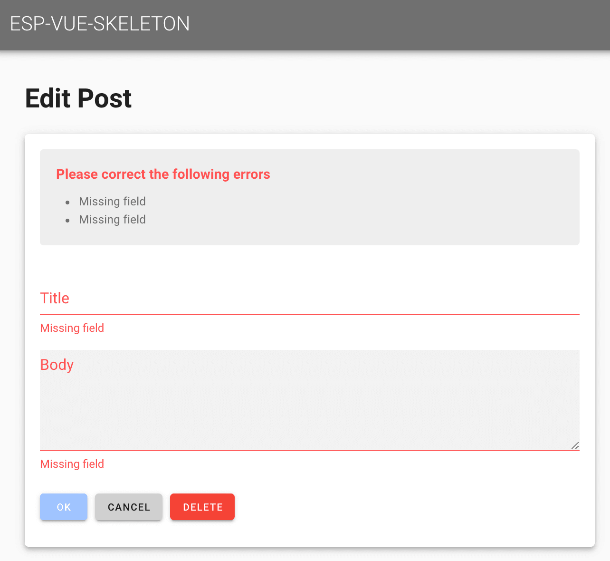

This tour provides an overview of creating ESP applications for Single Page Applications using the VueJS and ESP frameworks.
A Single Page Application (SPA) when implemented with VueJS and ESP offers compelling advantages. These include:
So you can work along as the tour progresses, install the following products and tools. ESP applications and this tour make good use of the NPM tool and Pak from Embedthis.
Before starting, first make sure you have read the Quick Start, and the ESP Tour and that you have ESP, Pak and NPM installed on your system so you can type along as you go.
Download ESP Download Pak Download NPM
ESP provides skeletons to get you started quickly. These skeletons packages provide the core structure of your application and include pages, templates, stylesheets and scaffolds that are used to generate models, views and controllers as your application grows.
To create a new ESP application, we will use the Pak package manager to install the esp-vue-skeleton application skeleton. The esp-vue-skeleton is a starter package for ESP SPA applications with client-side views using the VueJS framework. Other skeletons include the esp-html-skeleton for ESP HTML applications with server-side views.
First make a directory named blog and then install the esp-vue-skeleton package.
$ mkdir blog $ cd blog $ pak init $ pak install embedthis/esp-vue-skeleton [Install] js-error 1.0.0 [Install] js-json 1.0.0 [Install] js-net 1.0.0 [Install] js-polyfill 1.0.0 [Install] js-rest 1.0.0 [Install] vu-feedback 1.0.0 [Install] vu-input 1.0.0 [Install] vu-input-group 1.0.0 [Install] vu-validate 1.0.0 [Install] esp-vue-skeleton 1.0.0 [Install] vue [Install] vue/cli
This simple command sequence accomplished quite a bit, including:
Installed the esp-vue-skeleton and other dependant packages. You can see these via the pak list command.
The skeleton includes a Makefile with familiar "build", "run", "clean" targets.
$ make build
[Compile] esp compile
[Build] vue-cli-service --mode development build
To run the application, type:
$ make run
[Run] esp &
[Run] vue-cli-service serve
Started HTTP service on 127.0.0.1:8000
INFO Starting development server...
The ESP server listens for API requests on port 8000. The VueJS server listens on port 8080 for browser requests. To access your application enter http://localhost:8080 in your browser. You should see your first application home page.
The ESP web framework follows the convention over configuration philosophy popularized by Ruby on Rails. This means that ESP adopts certain conventions about where files and directories should be placed and about how names are used. If you work with these conventions, then you need to do little or no configuration. Things will just work.
Here are the most important files and directories:
| Name | Description |
|---|---|
| esp.json | Primary ESP configuration file |
| pak.json | This file specifies the application name, version and dependent packages. |
| cache | Cached compiled ESP application (app.c) and ESP controllers. |
| ui | Client VueJS application |
| ui/public | Public static HTML pages |
| ui/dist | Distribution directory when building for the "prod" profile for the generated VueJS application including: web pages, assets, scripts, and style-sheets. |
| controllers | ESP Application controller code |
| db | Database file and database initialization scripts |
| paks | Locally installed packages |
Scaffolding is a quick way to generate pieces of your application. Scaffolds are stub MVC resource managers that provide basic Create-Read-Update-Delete (CRUD) for a resource or group of resources. ESP scaffolds include:
Don't confuse ESP scaffolds with ESP skeletons. Skeletons are installable packages that are ready-made application starters. Scaffolds are generated CRUD resource managers.
Once the esp-vue-skeleton is installed, the esp command can generate scaffolds. The command below will create a post scaffold that includes a database post table with a blog post title and post comment body. The title is a string data type and the body is a multi-line text field.
$ esp generate scaffold post title:string body:text
[Create] controllers/post.c
[Create] Directory: ui/src/post
[Create] ui/src/post/list.vue
[Create] ui/src/post/edit.vue
[Create] ui/src/post/Post.js
[Create] ui/src/post/routes.js
[Create] Directory: migrations
[Create] migrations/201909181352170_create_scaffold_post.c
[Compile] migrations/201909181352170_create_scaffold_post.c
[Migrate] Apply 201909181352170_create_scaffold_post.c
[Migrate] All migrations applied
[Generate] Complete
This command created:
The command also ran the migration to create the database and table.
Now if you set your browser to the home page, you will now see an empty listing of blog posts.
The New Post button directs your browser to the /post/ URL. This form is being rendered on the client from the ui/post/edit.vue page. Behind the scenes, the browser asks for the /post/init URL to determine what are the required input fields for a post.
Fill in the input fields and click OK to add the new blog post.

The home page is now updated with the first post. You can click on the post title or body to edit its contents. This will run the same post/edit.vue template that was used to create the post.
When OK button is clicked to create a post, the browser invokes the local post/edit.vue page to accept user input. That is then sent to the server /post/ URL with the HTTP POST method to create the blog post. ESP parses this URL and and selects the appropriate request route and handler for the request. It then identifies post as the name of the server-side controller invokes the createPost action routine to service the request. The controller is automatically compiled and loaded if required.
A controller file typically defines many such C functions called actions, that are bound to specific URLs via ESP routes. Actions are defined using the espAction API in the initialization function of the controller.
A minimal post controller file looks like this:
#include "esp.h"
static void createPost() {
sendResult(updateRec(createRec("post", params("fields"))));
}
static void updatePost() {
sendResult(updateFields("post", params("fields")));
}
ESP_EXPORT int esp_controller_blog_post(HttpRoute *route) {
espAction(route, "post/create", NULL, createPost);
return 0;
}
The job of the action is to respond to the request and generate the response via views for the client. Here is the listPost action in the generated post controller.
static void listPost() {
sendGrid(findGrid("post", NULL));
}
The listPost action queries the database and sends the list table (grid) to the client for rendering in the browser by the post/list.vue page.
Complete validation of all user entered data is essential for a robust and secure application. Some validation may be performed at the client, but full validation must always be fully implemented on the server incase the client or network connection is compromised. ESP provides flexible validation methods to help ensure the data you save at the server is correct.
You can add calls to validate record data before it is saved to the database. To do this, edit the controllers/post.c file and add calls to ediAddValidation.
ESP_EXPORT int esp_controller_blog_post(HttpRoute *route)
{
Edi *edi;
/* Existing code */
edi = getDatabase();
ediAddValidation(edi, "present", "post", "title", 0);
ediAddValidation(edi, "present", "post", "body", 0);
ediAddValidation(edi, "unique", "post", "title", 0);
return 0;
}
This will cause the database to automatically ensure that the title and body fields are not blank and that the title is unique in the post database table.
If you click OK in the Post edit web page without entering any data you will see the following:
This automatically identified the input fields in error and generated a summary of the errors above the form. Of course, this default error highlighting behavior can be overridden if desired by modifying the application style sheets.
Other validation types include: checkNumber, checkBoolean, checkDate and checkFormat. You can also define new validation types by calling ediDefineValidation.
If you want to host your application in Appweb, generate the required appweb.conf via:
esp generate appweb
This will generate a stand-alone appweb.conf that includes the required EspApp directive to define your application.
EspApp prefix="/demo" config="/path/to/esp.json
That concludes the a quick tour through some of the capabilities of the ESP web framework. To learn more, please read: